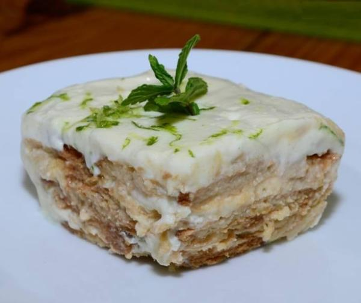

Marquesa de limón

Este delicioso postre es perfecto para compartir con tus seres queridos.
Es muy sencillo de hacer, no necesita horno, y puedes prepararlo con ayuda
de niños. Tiene una mezcla de sabores dulces y ácidos que lo hacen una
combinación perfecta. Vas a necesitar un poco de paciencia para probar
los resultados, pero te prometo que valdrá la pena.
INGREDIENTES
Para 4 raciones
- 5 limones,
- 250ml de crema de leche,
- 250ml de leche condensada
- Galletas dulces de tu preferencia.
PASOS A SEGUIR
- Raya un poco de la cascara de los limones y guarda en la nevera.
- Exprime los 5 limones.
- En un bowl, mezcla la crema de leche y la leche condensada con ayuda de una batidora.
- Agrega paulatinamente a esta mezcla el jugo de limón.
- Bate hasta tener una consistencia cremosa.
- En una refractaria, coloca una capa de galletas.
- Luego, coloca una capa de la mezcla.
- Repite estos dos últimos pasos hasta que acabes con la mezcla.
- Agrega en la superficie la rayadura de limón para decorar.
- Refrigera por al menos 4 horas.
¡BUEN PROVECHO!